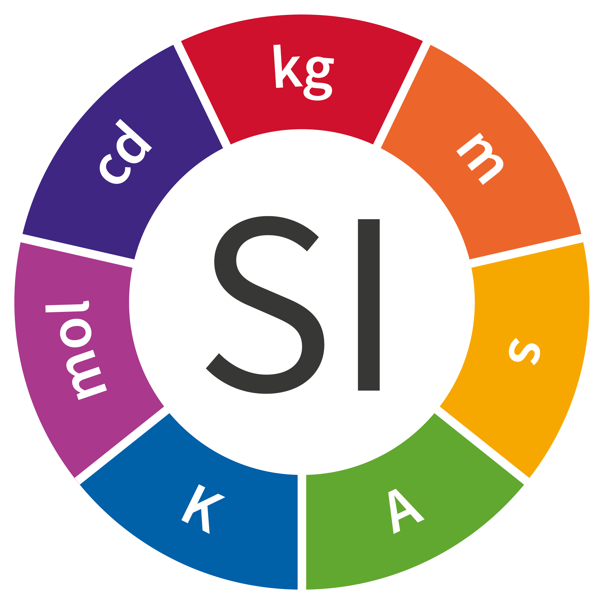
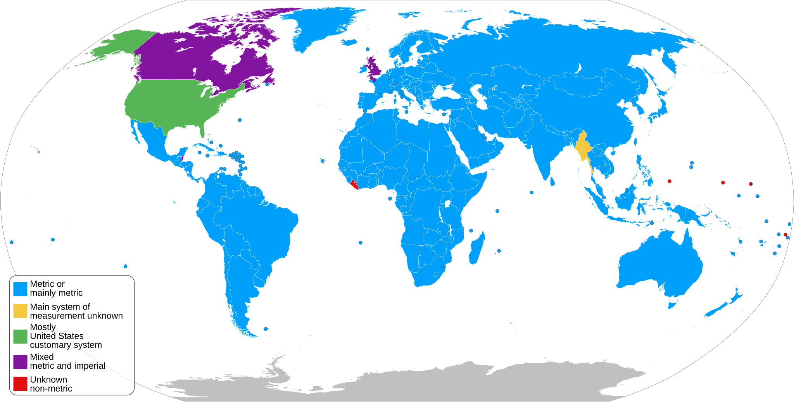

Quantitative Reasoning
1015SCG
Lecture 2

Units of measurement

Units
|
|
Units
|
|
||||||||||||||||||||||||||
Units: Other physical quantities
Any other physical quantities can be written as some combination of these base units, and are sometimes are given their own name.
- $\text{velocity}= \dfrac{\text{distance}}{\text{time}}$
- $\text{acceleration}= \dfrac{\text{velocity}}{\text{time}}$
- $\text{force}= \text{mass}\times \text{acceleration}$ - Newton
- $\text{pressure}= \dfrac{\text{force}}{\text{area}}$ - Pascal
- $\text{energy}= \dfrac{1}{2}\text{mass}\times \text{velocity}^2$ - Joule
Other sets of units
There are a number of non-SI units accepted for use alongside SI units, e.g.:
- Angle in degrees, minutes and seconds (e.g. latitude and longitude).
- Area in hectares.
- Volumes in litres.
- Times in minutes, hours, days, years.
- Temperature in degrees Celsius.
Other sets of units
🇺🇸 Americans use their own customary units (related to the British Imperial system), e.g.:
- Lengths in inches, feet, yards, miles and area in acres.
- Mass in pounds.
- Temperatures in degrees Fahrenheit (F)
- Ounces (oz) for mass and fluid ounces (fl oz) for volume.
Other sets of units

Image source: Metric and Imperial system (2019)
Example
The length of the stick is measured to be 70 cm. But you want to communicate with your American friend. How many inches it is?
Example
The length of the stick is measured to be 70 cm. But you want to communicate with your American friend. How many inches it is?